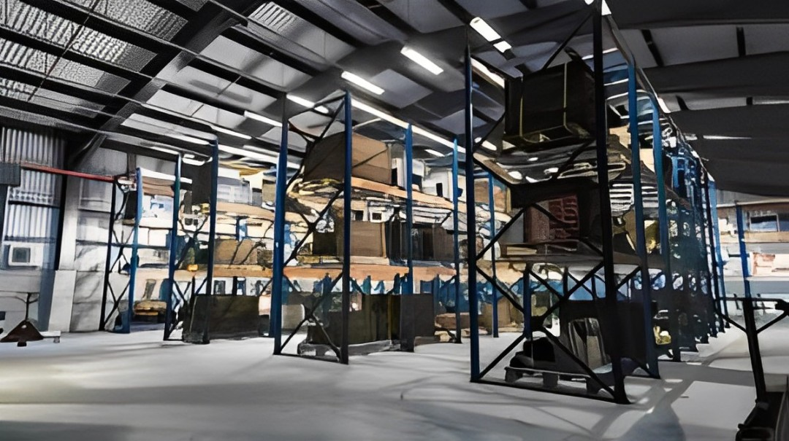
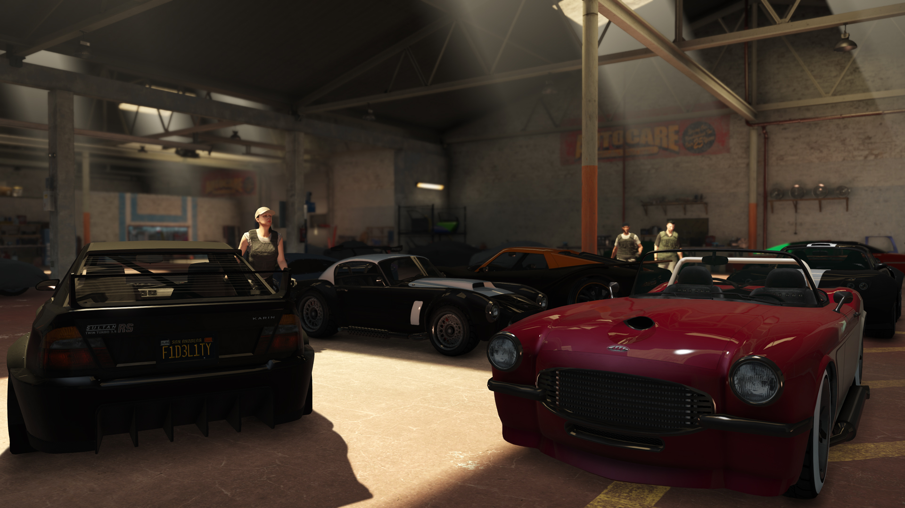
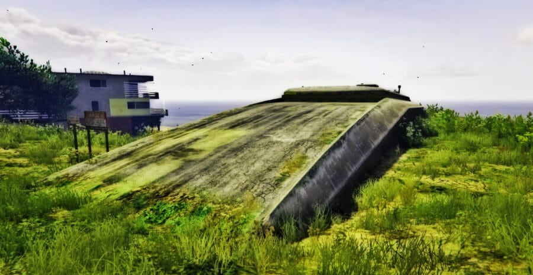

metodos de renda

galpão de muamba
O Galpão de Muamba permite compitar produtos no comércio de mercadorias ilegais. Ao Comprando um galpão, pode-se armazenar e vender produtos contrabandeados, completando missões para aumentar os lucros. É uma maneira bem simples de gerar lucro, seja sozinho ou em equipe.

exportação de veiculos
A exportação de veículos envolve roubar carros de alta qualidade e vendê-los para lucro. Ao adquirir um galpão de veículos, voce pode armazenar e personalizar os carros antes de vendê-los. As missões de exportação exigem habilidades de condução e estratégia, já que é preciso evitar a polícia e outros jogadores. O objetivo é maximizar os lucros ao vender veículos raros e valiosos.

bunker
O bunker é uma propriedade que permite atuar no comércio de armas. o esquema consiste em operar um bunker para produzir e armazenar suprimentos de armamentos, que podem ser vendidos para lucro. O bunker também oferece missões e atividades, como a fabricação de armas e a defesa contra ataques. É uma forma estratégica de ganhar dinheiro e expandir os negócios, além de proporcionar um ambiente para atividades clandestinas.
 19.44.25_84908972.jpg)
 18.11.56_751549f5.jpg)